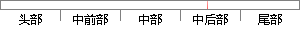

start_os()函数首先从优先级有序表找出就绪的最高优先级任务，然后开始运行就绪任务，代码如下。
片段位置图

相似结果
相似片段： OSStartHighRdy(); //开始运行优先级最高的任务,这个函数涉及到CPU寄存器的...如果为假,就找出就绪表里的就绪任务的最高优先级,并放入OSPrioHighRdy 里,然后...
| 标题 | 《第四章:OSStart()_>宁静致远<_百度空间》 |
| 对比库 | PaperRater云论文库 |
| 网址 | http://hi.baidu.com/xdvlzxaikofhpwe/item/fe77880c3030b230a2332a05 |
| 相似率 | 61.9% （轻度抄袭） |
※ 片段修改建议 ※
近似词参考：- 如下：以下
- 开始：起头 入手下手 最先
- 就绪：停当
- 任务：使命 义务
- 首先：起首
系统自动生成语句：start_os()函数起首从优先级有序表找出停当的最高优先级使命，然后起头运行停当使命，代码以下。
注：本片段修改建议为系统自动生成，仅供参考。